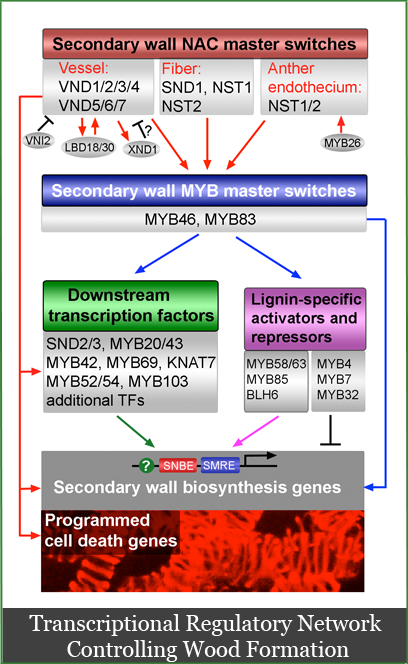

Our Research
Our research interests center on the molecular mechanisms controlling cell differentiation, cell morphogenesis and cell wall formation in plants. A plant body is composed of many different cell types; at least 40 cell types have been defined according to their size, shape, location, wall structure, or cellular contents. Understanding the molecular mechanisms controlling the differentiation of different cell types is an important issue in plant biology.
We have been using Arabidopsis fiber cells as a model to address this issue. Fiber cells as being the longest plant cells and having massive secondary walls present an excellent system for uncovering genes controlling cell morphogenesis and secondary wall synthesis. We have isolated a group of mutants, and cloned and characterized a number of genes involved in these processes.
These genes encode proteins including a katanin microtubule-severing protein essential for the organization of cortical microtubules, a kinesin-like microtubule-binding protein essential for cell wall strength, two phosphoinositide phosphatases required for actin organization and cell morphogenesis, a novel glycosyltransferase involved in xylan synthesis, and a homeodomain leucine-zipper protein important in the spatial control of fiber cell differentiation. Because fibers have important economic values, studies on fiber cell formation would not only advance our knowledge in plant biology but also have significant economic and agronomic implications.
We are currently continuing our endeavors to characterize the functions of genes involved in the cytoskeletal regulation and cell morphogenesis, and genes required for secondary wall deposition and cell wall strength. My long-term goals are to dissect the molecular mechanisms underlying cell morphogenesis and secondary wall formation, and utilize the knowledge learned from the model plant to genetically improve the quality and quantity of fibers in crop plants and trees.